Короткая инструкция для преподавателей: как войти на сайт, создать тест по своей дисциплине, добавить вопросы и сдать его администратору. В конце есть раздел для администратора.
Один тест = одна дисциплина. Всё делается в браузере, ничего устанавливать не нужно.
Чтобы выйти, нажмите «Выйти» в правом верхнем углу.
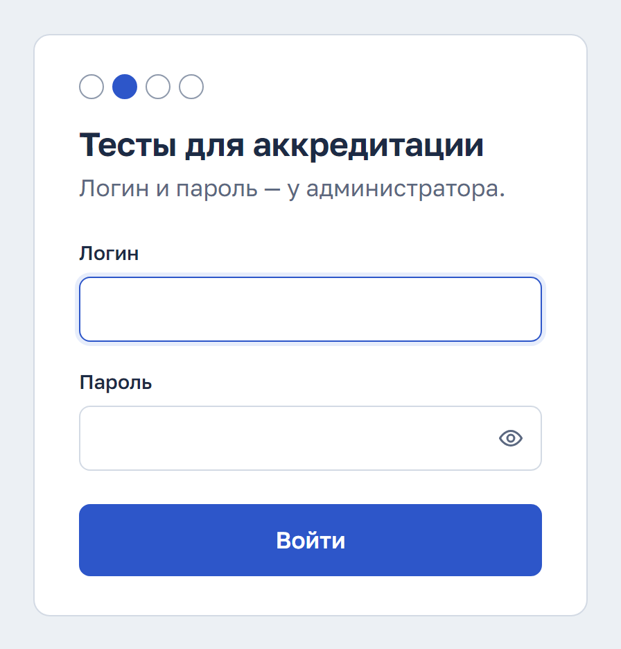
ФИО и кафедру сайт запомнит, и в следующий раз их не придётся вводить заново.
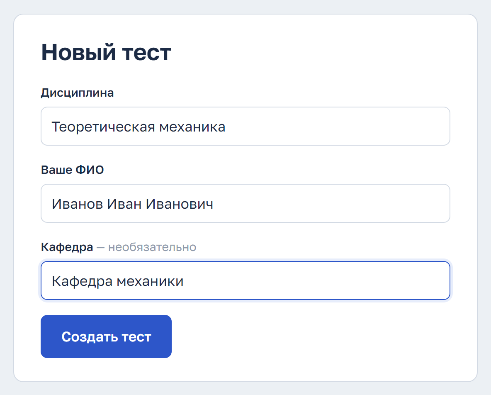
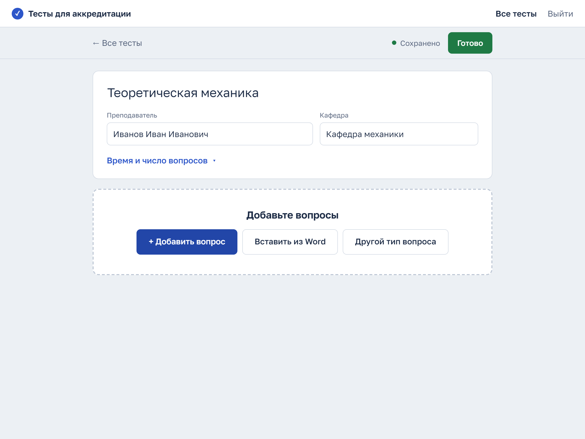
Нажмите + Добавить вопрос. Появится карточка вопроса: напишите текст вопроса и варианты ответа, затем нажмите «Верный» у правильного варианта.
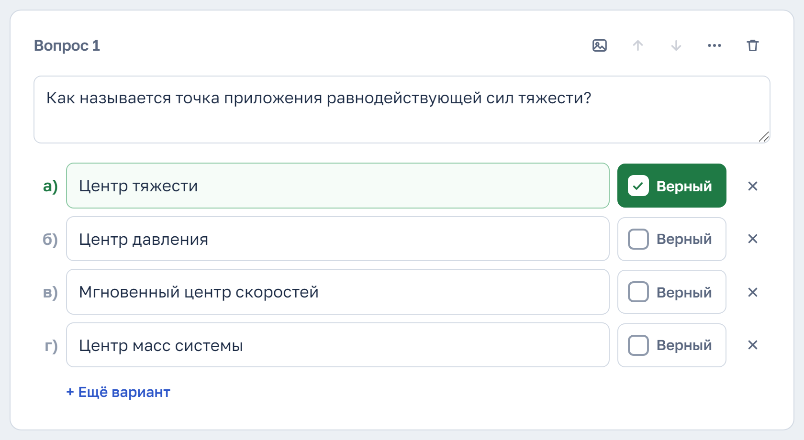
| Кнопка | Что делает |
|---|---|
| ✓ Верный | Отмечает правильный вариант. Можно отметить несколько: тогда студент должен выбрать все верные. Тип вопроса сайт подберёт сам. |
| ✕Крестик | Удаляет вариант ответа. |
| + Ещё вариант | Добавляет ещё одну строку для варианта. |
| Картинка | Добавляет к вопросу рисунок (PNG, JPG, GIF, до 5 МБ). Ещё картинку можно вставить через Ctrl+V или перетащить мышкой на вопрос. |
| Стрелки | Перемещают вопрос выше или ниже в списке. |
| Ещё | Копия вопроса, смена типа, баллы, перемешивание вариантов (см. раздел 6). |
| Корзина | Удаляет вопрос целиком. Сразу после удаления внизу появится кнопка, чтобы его вернуть. |
Если тест уже набран в Word, не переписывайте его вручную, а вставьте целиком.
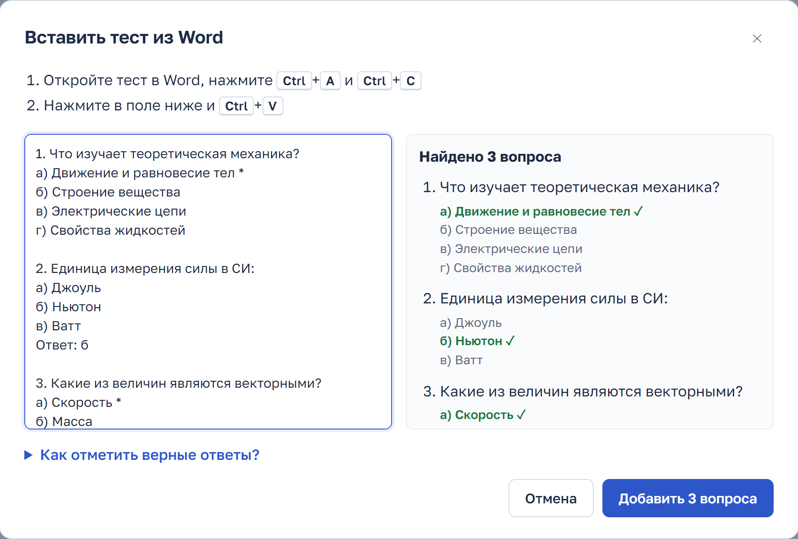
1. Единица измерения силы в СИ: а) Джоуль б) Ньютон * в) Ватт
Обычно хватает вопроса с выбором ответа. Если нужен другой формат, нажмите Другой тип вопроса:
| Верно или неверно | Утверждение, студент выбирает «верно» или «неверно». |
| Ответ словом | Студент вписывает слово. Можно добавить другие допустимые написания. |
| Ответ числом | Студент вводит число. Можно задать погрешность (±). |
| Соответствие | Нужно соединить пары, например термин и определение. Можно добавить «лишний ответ», чтобы было труднее угадать. |
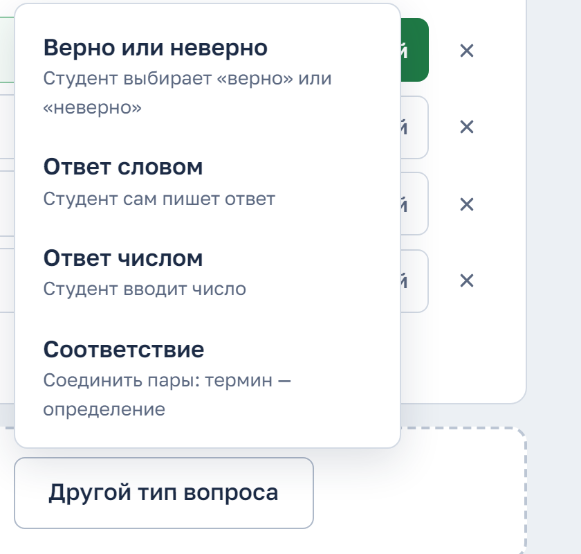
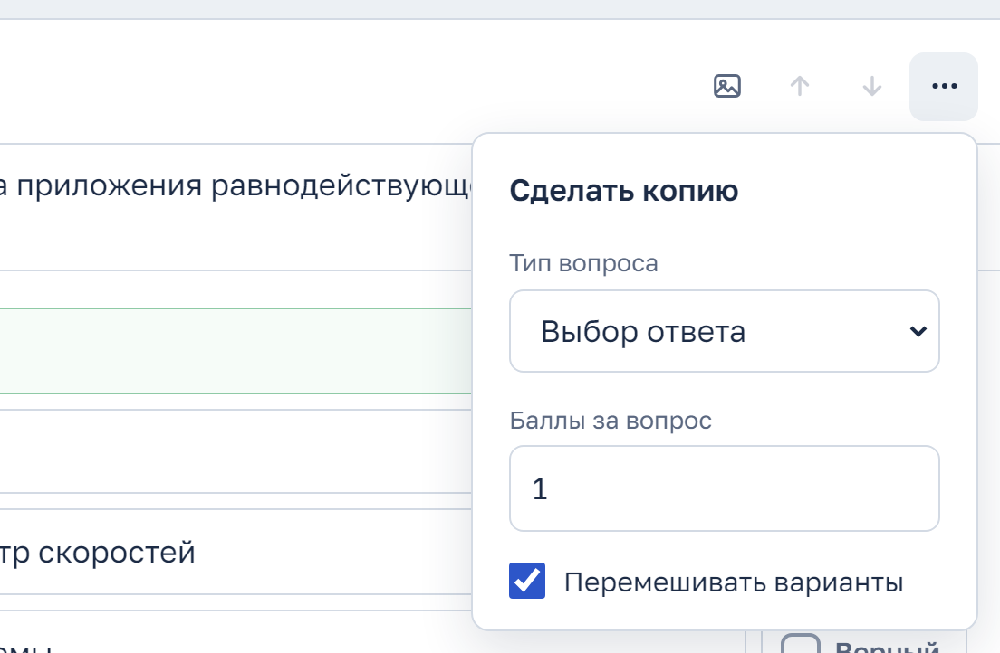
Кнопка «⋯» на карточке вопроса открывает меню:
В шапке теста нажмите «Время и число вопросов». Все поля необязательные: если оставить их пустыми, администратор настроит тест сам.
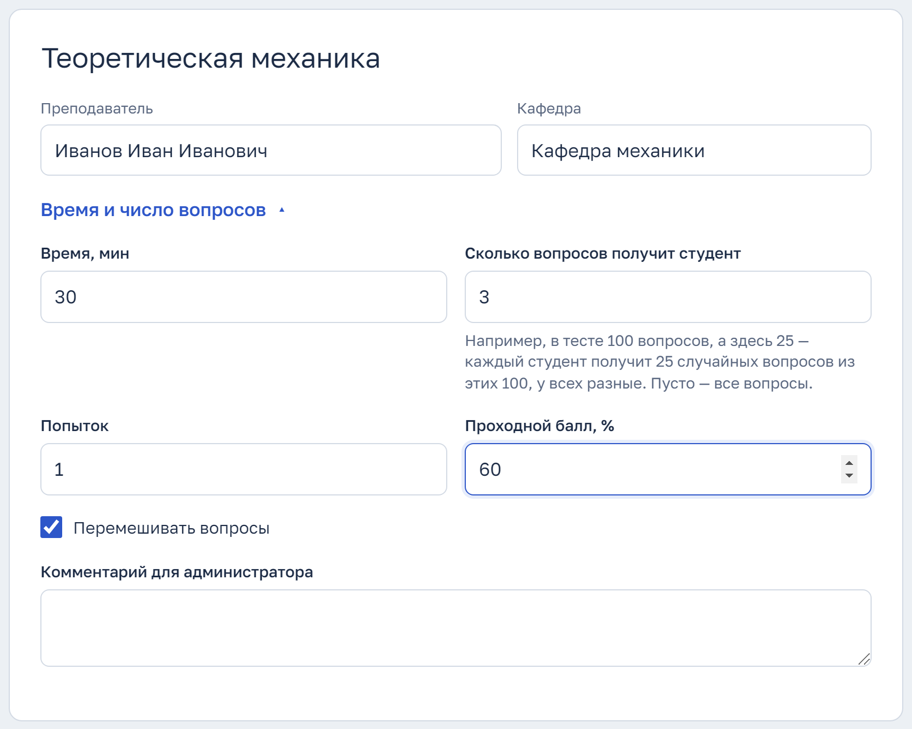
| Время, мин | Сколько минут даётся на тест. Пусто — без ограничения. |
| Сколько вопросов получит студент | Например, в тесте 100 вопросов, а здесь стоит 25: каждый студент получит 25 случайных вопросов, у всех разные. Пусто — все вопросы. |
| Попыток | Сколько раз можно пройти тест. |
| Проходной балл, % | Минимальный процент для зачёта. |
| Перемешивать вопросы | Вопросы идут в случайном порядке. |
| Комментарий | Любые пожелания администратору. |
Вверху страницы всегда видна панель:
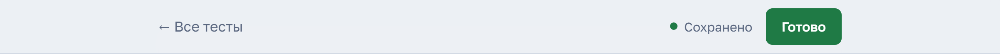
После нажатия «Готово» вопросы с ошибками выделяются красным, и в каждом написано, что исправить. На панели появляется красная кнопка Исправить: N: нажимайте её, и сайт по очереди покажет каждый такой вопрос.
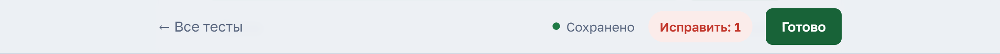
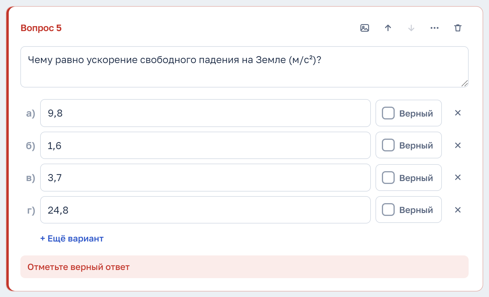
Частые ошибки: не отмечен верный ответ, пустой текст вопроса, меньше двух вариантов. Ещё одна: в настройках студенту задано больше вопросов, чем есть в тесте.
Появится окно «Тест готов». Администратор увидит тест в списке готовых. Если позже понадобится что-то поправить, просто откройте тест снова и после правок ещё раз нажмите «Готово».
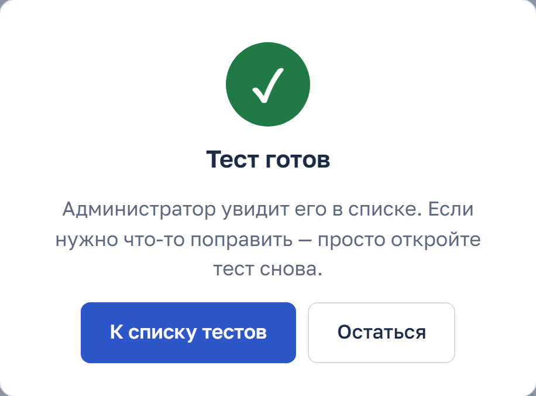
На главной странице («Все тесты») видны тесты всех преподавателей. Чтобы открыть тест, нажмите на его строку. Если тестов много, сверху появится поиск.
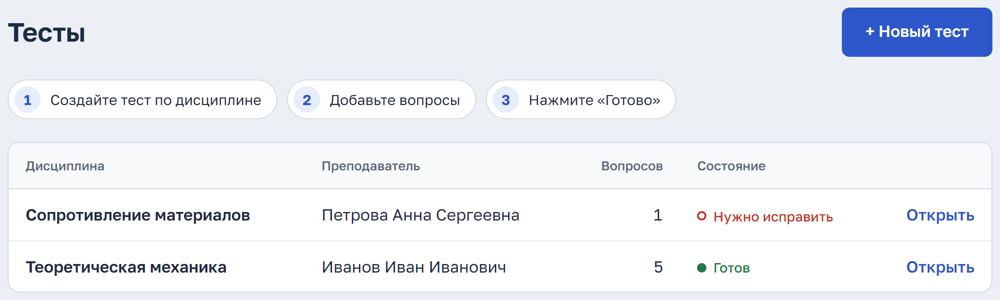
| Состояние | Что значит |
|---|---|
| ○ Заполняется | Тест ещё не сдан: вопросов пока нет или «Готово» ещё не нажимали. |
| ○ Нужно исправить | В тесте есть ошибки, например не отмечен верный ответ. Откройте тест и нажмите «Готово»: сайт покажет, что не так. |
| ● Готов | Тест проверен, администратор может загружать его в Moodle. |
Внизу редактора есть ссылка «Посмотреть как студент». Она открывает тест в том виде, в каком его увидят студенты. Кнопка «Показать ответы» подсвечивает верные варианты зелёным, это удобно для финальной проверки.
Там же внизу есть «Удалить тест». Удалённый тест администратор может восстановить.
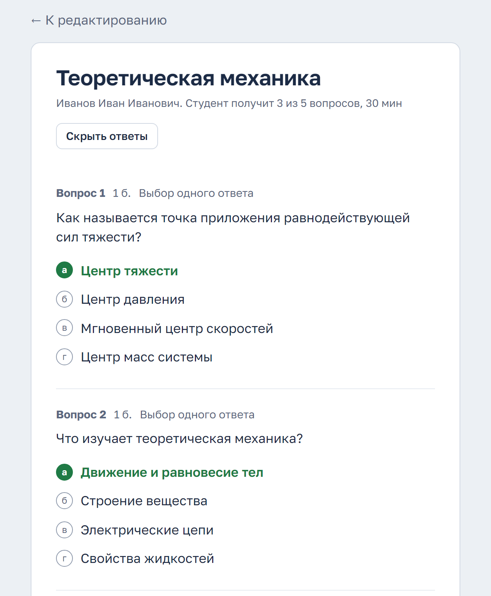
Администратор входит под своим логином. В верхнем меню у него есть пункт «Админка».
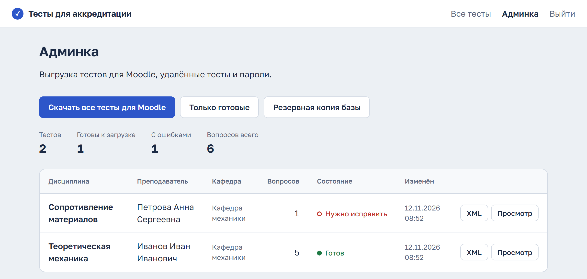
| Скачать все тесты для Moodle | Архив: по одному XML-файлу на дисциплину и tests.csv с настройками (время, число вопросов, попытки). Тесты с ошибками лежат в отдельной папке «с ошибками». |
| Только готовые | Тот же архив, но только тесты в состоянии «Готов». |
| Резервная копия базы | Скачивает всю базу целиком. Делайте копию перед крупными изменениями. |
| XML Просмотр | XML одного теста и его просмотр с ответами. |
| Удалённые тесты | Тесты, которые удалили преподаватели. Вернуть тест можно кнопкой «Восстановить». |
| Логины и пароли | Смена общего пароля преподавателей и пароля администратора (не короче 8 символов). После смены все, кто был на сайте, должны войти заново. |